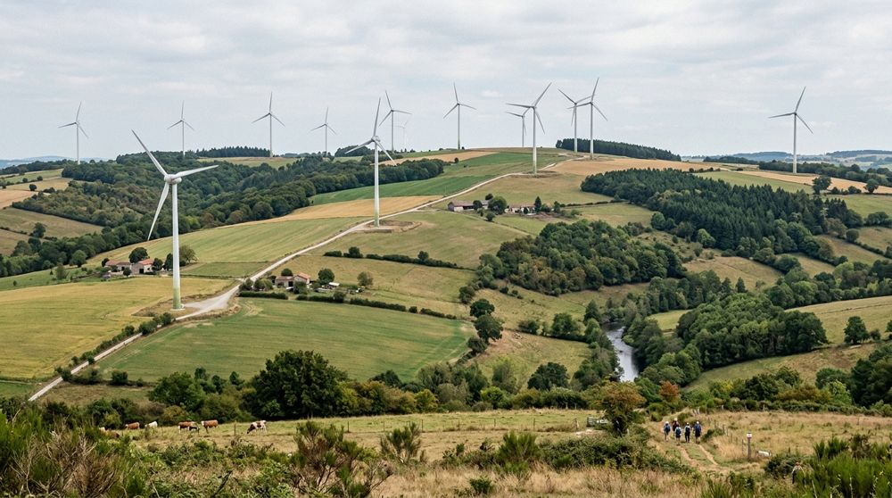
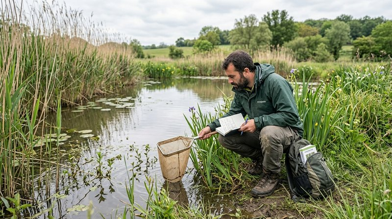
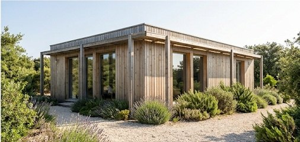

Présentation
Des engagements concrets pour la biodiversité
Démarche de performance environnementale et préservation des espaces naturels.

Les engagements de notre bureau d'études
Démarche de performance environnementale
Le bureau d'études Altifaune s'inscrit dans une démarche de performance environnementale :
- Mutualisation maximale des déplacements sur le terrain, sans nuire à la qualité des études
- Respect de la propreté et de la quiétude des sites (discrétion, gestion des déchets)
- Respect de la réglementation, des guides existants et des attentes des services instructeurs
- Assistance et conseil aux clients tout au long de l'instruction des dossiers
- Réponse aux sollicitations liées au processus de certification ISO 14001

01
En faveur de l'environnement
Altifaune consacre une part de son chiffre d'affaires à l'acquisition de terrains pour les soustraire à de fortes pressions anthropiques. Plusieurs éco-réserves sont aujourd'hui créées.
Découvrir les éco-réserves
02
En faveur du développement durable
En choisissant une ossature en bois pour la construction de ses locaux, le bureau d'études s'engage également dans le développement durable.